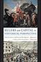

|
Legal
Bases
Baseball and the Law
Abrams, Roger I.
240 pp • 6x9 • Spring 1998
paper 978-1-56639-890-9
cloth 978-1-56639-599-1 |

|
The
Money Pitch
Baseball Free Agency and Salary Arbitration
Abrams, Roger I.
240 pp • 6x9 • Spring 2000
cloth 978-1-56639-774-2
|
 |
Cheaper by the Hour
Temporary Lawyers and the Deprofessionalization of the Law
Brooks, Robert
234 pp • 6x9 • Spring 2011
cloth 978-1-4399-0285-1
|
|  |
Rulers and Capital in Historical Perspective
State Formation and Financial Development in India and the United States
Chatterjee, Abhishek
188 pp • 5.5x8.25 • Fall 2017
cloth 978-1-4399-1500-4
|
|
In Defense of Public Lands
The Case against Privatization and Transfer
Davis, Steven
292 pp • 5.5x8.25 • Spring 2018
paper 978-1-4399-1537-0
cloth 978-1-4399-1536-3
|
|
Charles E. Hires and the Drink that Wowed a Nation
Double, Bill
270 pp • 5.5x8.25 • Spring 2018
paper 978-1-4399-1591-2
|
 |
The Undevelopment of Capitalism
Sectors and Markets in Fifteenth-Century Tuscany
Emigh, Rebecca Jean
288 pp • 6x9 • Spring 2008
paper 978-1-59213-619-3
cloth 978-1-59213-618-6
|

|
Creating
a New World Economy
Forces of Change and Plans for Action
edited by Epstein, Gerald, Julie Graham and Jessica Nembhard,
foreword by Samuel Bowles
496 pp • 6x9 • Fall 1993
paper 978-1-56639-054-5
cloth 978-1-56639-053-8 |
|
Resisting Work
The Corporatization of Life and Its Discontents
Fleming, Peter
210 pp • 5.5x8.25 • Spring 2014
paper 978-1-4399-1113-6
cloth 978-1-4399-1112-9 |
 |
Going Global
Culture, Gender, and Authority in the Japanese Subsidiary of an American Corporation
Fuller, Ellen V.
232 pp • 5.25x8.25 • Fall 2008
paper 978-1-59213-689-6
cloth 978-1-59213-688-9
|

|
Ethical Borders
NAFTA, Globalization, and Mexican Migration
Hing, Bill Ong
248 pp • 6x9 • Spring 2010
paper 978-1-59213-925-5
cloth 978-1-59213-924-8
|

|
The International Monetary Fund and Latin America
The Argentine Puzzle in Context
Kedar, Claudia
264 pp • 6x9 • Fall 2012
cloth 978-1-4399-0909-6
|

|
Pennsylvania Politics and Policy
A Commonwealth Reader
Volume 1
edited by Leckrone, J. Wesley and Michelle J. Atherton
218 pp • 6x9 • Spring 2018
paper 978-1-4399-1670-46
|
 |
Bill Giles and Baseball
Lord, John B.
328 pp • 6x9 • Spring 2014
cloth 978-1-43990-786-3
|
 |
The Company We Keep
Occupational Community in the High-Tech Network Society
Marschall, Daniel
204
pp • 6x9 • Spring 2012
paper 978-1-4399-0756-6
cloth 978-1-4399-0755-9
|

|
Financialization
of Daily Life
Martin, Randy
240 pp • 5.5x8.25 • Fall 2002
paper 978-1-56639-988-3
cloth 978-1-56639-987-6
|
|
We Decide!
Theories and Cases in Participatory Democracy
Menser, Michael
360 pp • 6x9 • Fall 2017
paper 978-1-4399-1418-2
cloth 978-1-4399-1417-5
|

|
Knowledge LTD
Toward a Social Logic of the Derivative
Martin, Randy
264 pp • 6x9 • Spring 2015
paper 978-1-4399-1224-9
cloth 978-1-4399-1223-2
|

|
Will Big League Baseball Survive?
Globalization, the End of Television, Youth Sports, and the Future of Major League Baseball
Mitchell, Lincoln A.
208 pp • 5.5x8.25 • Fall
2016
paper 978-1-4399-1379-6
cloth 978-1-4399-1378-9
|
 |
Public Financing in American Elections
edited by Panagopoulos, Costas
268 pp • 6x9 • Spring 2011
paper 978-1-4399-0693-4
cloth 978-1-4399-0692-7
|

|
Blue Skies
A History of Cable Television
Parsons, Patrick R.
816 pp • 6x9 • Fall 2007
cloth 978-1-59213-287-4 |
|
The
Business of Practicing Law
The Work Lives of Solo and Small-Firm Attorneys
Seron, Carroll
240 pp • 6x9 • Spring 1996
paper 978-1-56639-407-9
cloth 978-1-56639-406-2 |
|
Believing in Cleveland
Managing Decline in “The Best Location in the Nation”
Souther, J. Mark
288 pp • 6x9 • Fall 2017
paper 978-1-4399-1373-4
cloth 978-1-4399-1372-7
|

|
Technocapitalism
A Critical Perspective on Technological Innovation and Corporatism
Suarez-Villa, Luis
230 pp • 5.5x8.25 • Fall 2009
paper 978-1-4399-0043-7
cloth 978-1-4399-0042-0
|

|
Merger Games
The Medical College of Pennsylvania, Hahnemann University, and the Rise and Fall of the Allegheny Health Care System
Swazey, Judith P.
324 pp • 6x9 • Fall 2011
cloth 978-1-4399-0717-7
|

|
Recasting Welfare Capitalism
Economic Adjustment in Contemporary France and Germany
Vail, Mark I.
248 pp • 6x9 • Fall 2009
cloth 978-1-59213-967-5
|

|
A New Brand of Business
Charles Coolidge Parlin, Curtis Publishing Company, and the Origins of Market Research
Ward, Douglas B.
240 pp • 5.5x8.25 • Spring 2009
cloth 978-1-43990-015-4
|

|
The
Forgotten Network
DuMont and the Birth of American Television
Weinstein, David
240 pp • 6x9 • Spring 2004
paper 978-1-59213-499-1
cloth 978-1-59213-245-4
|

|
The
Bottom Line
Observations and Arguments on the Sports Business
Zimbalist, Andrew
312 pp • 6x9 • Fall 2006
paper 978-1-59213-513-4
cloth 978-1-59213-512-7
|
 |
Circling the Bases
Essays on the Challenges and Prospects of the Sports Industry
Zimbalist, Andrew
234 pp • 5.5x8.25 • Fall 2010
paper 978-1-4399-0283-7
cloth 978-1-4399-0282-0
|

|
Religion
and Economic Justice
edited by Zweig, Michael
272 pp • 6x9 • Fall 1991
paper 978-1-56639-003-3
cloth 978-0-87722-847-9
|